Project
Contact
@hiikariihii
Designer
Vegetable
강지은
GROUND CHERRY RESEARCH
Category
Minimal Poster / Maximal Poster / Generative System
나를 상징하는 채소 ‘꽈리’를 선정한 후 꽈리를 미니멀라이징, 멕시멀라이징하고 부식화 된 잎의
형태를 따와
blind experiment를 진행했다.
GROUND CHERRY MINIMAL RESEARCH
GROUND CHERRY MAXIMAL RESEARCH
BLIND EXPERIMENT
Poster
Poster
Poster, Experiment
꽈리 열매, 부식화 된 잎, 꽈리를 부는 손동작을 단순화하여 포스터 연작을 제작했다.
꽈리의 부식화된 잎맥과 X-RAY의 시각적 유사성을 확장해 포스터로 제작했다.
꽈리의 잎맥을 발전시켜 실험을 진행했다. 피실험자는 눈을 가리고 두가지 실험에 참여한다. 눈을 가리고 긴 붓을 든 채 앞으로 걸어가며 긴 선을 그리는 데
이때 긍정 실험에서는 앞에서 도우미가 박수 소리를 내어 피실험자가 곧은 방향으로 갈 수 있게끔 도우지만, 부정 실험은 도우미가 없어 피실험자는 체험 도중
‘무서워 무서워'와 같은 어휘를 반복한다. 꽈리 포스터는 이 두가지 실험에서 각각 선과 실험 중 들린 소리를 채집해 긍정 포스터 두 개와 부정 포스터 두 개를 제작했다.
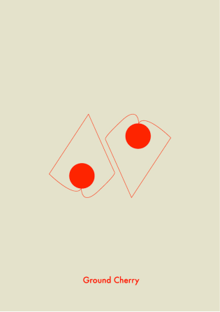
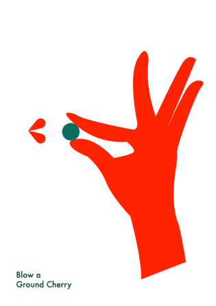
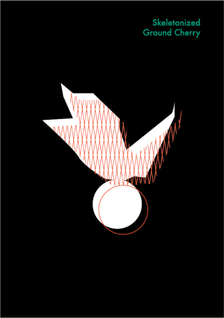
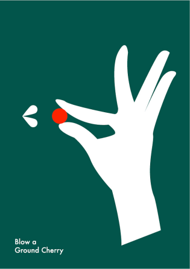
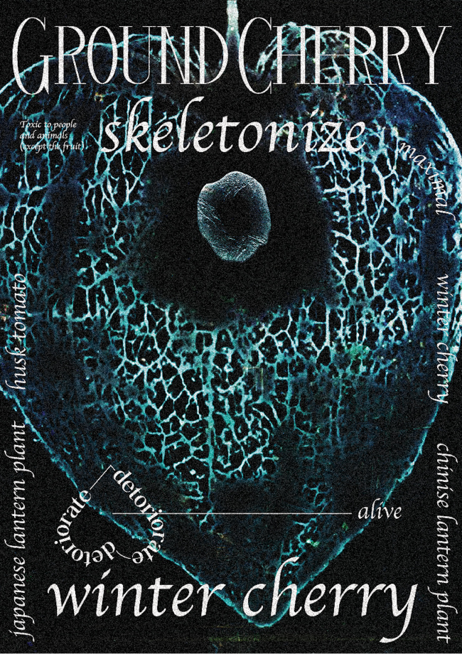
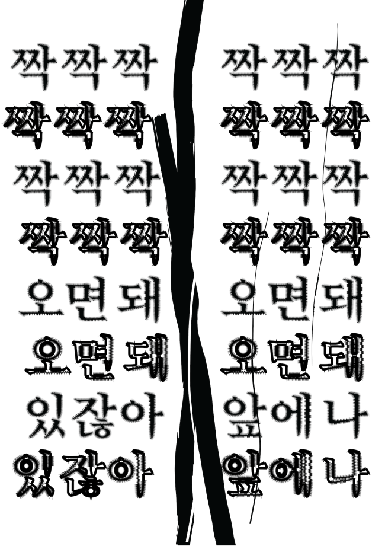
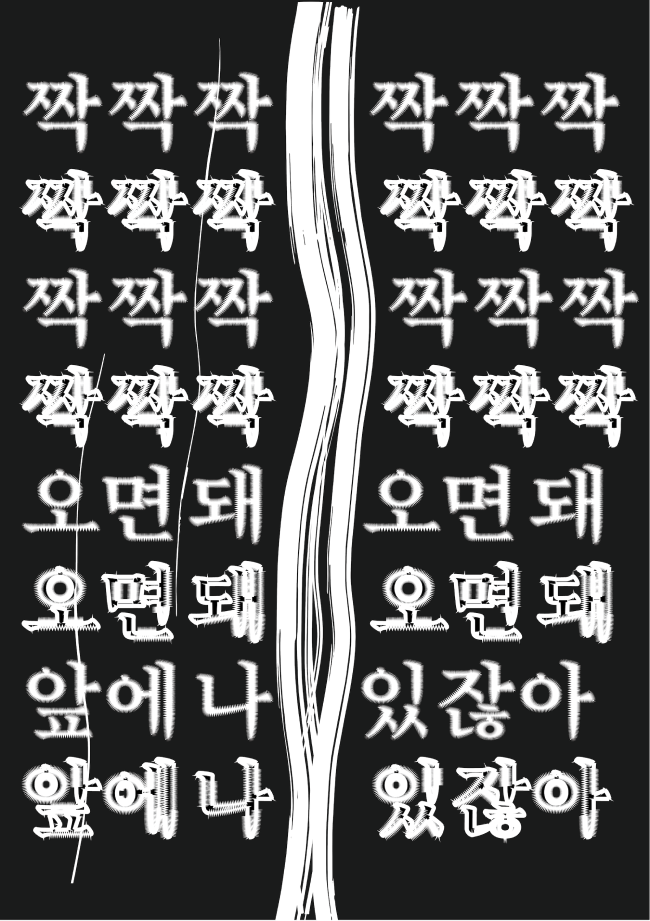
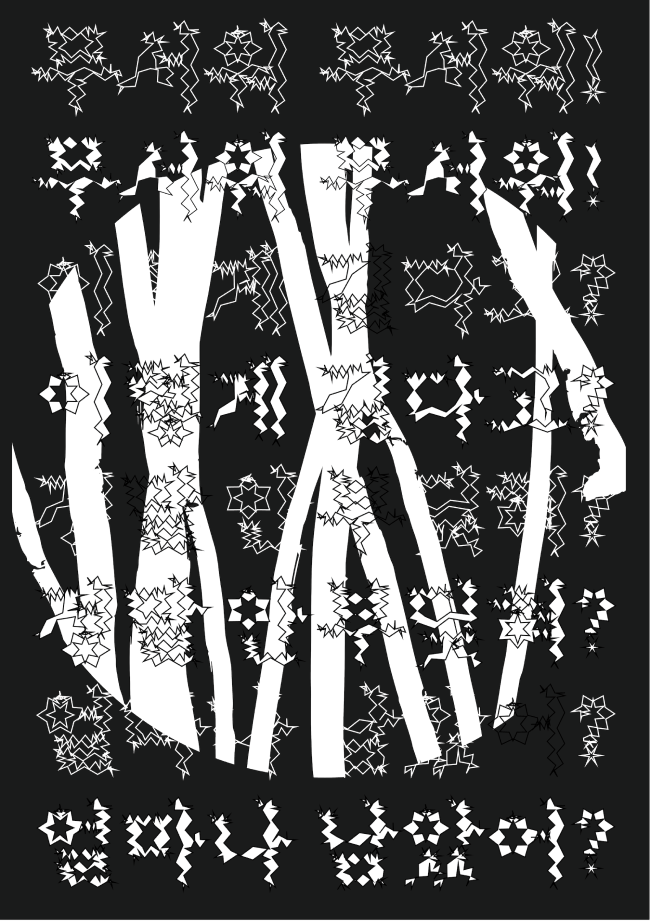
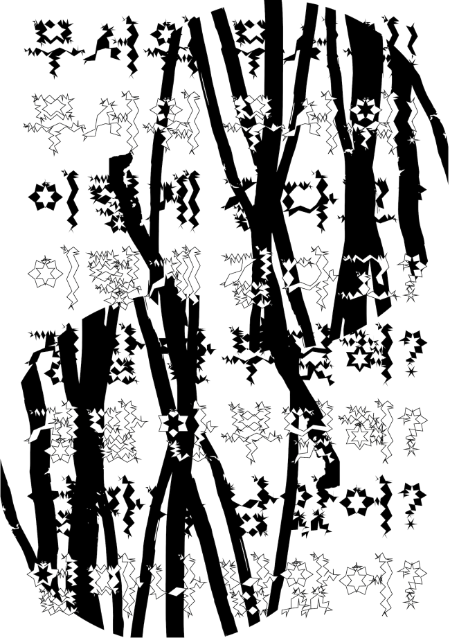
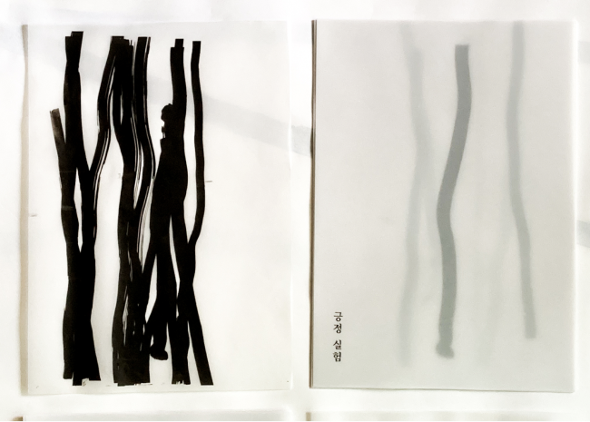
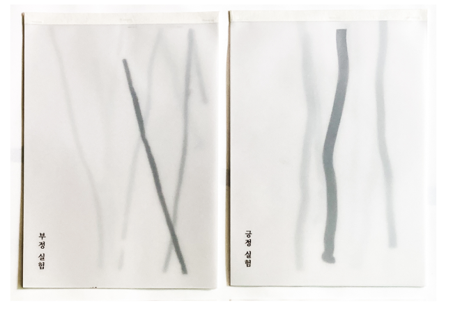
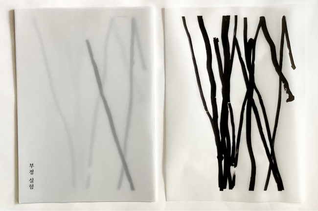
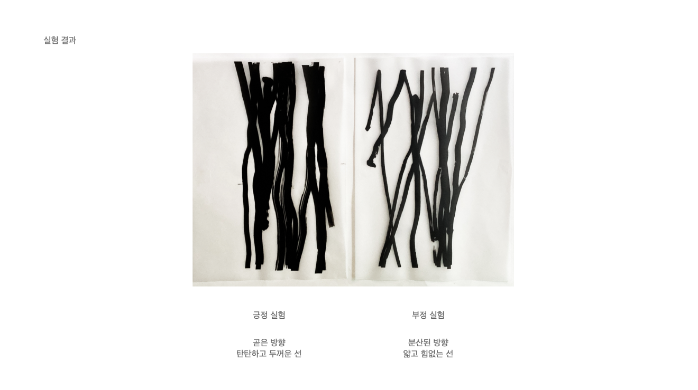